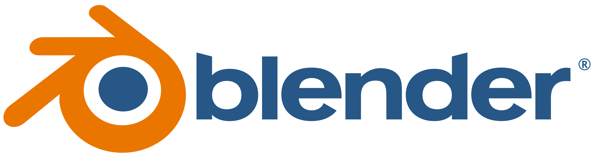
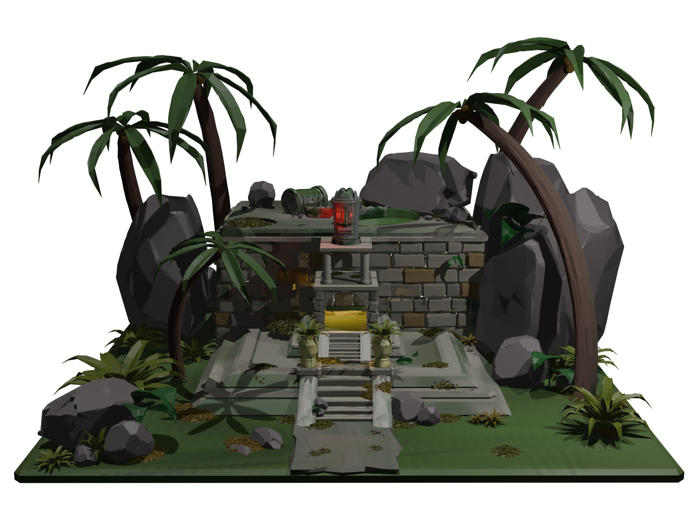
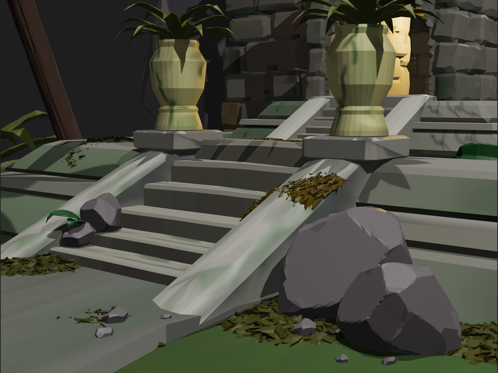
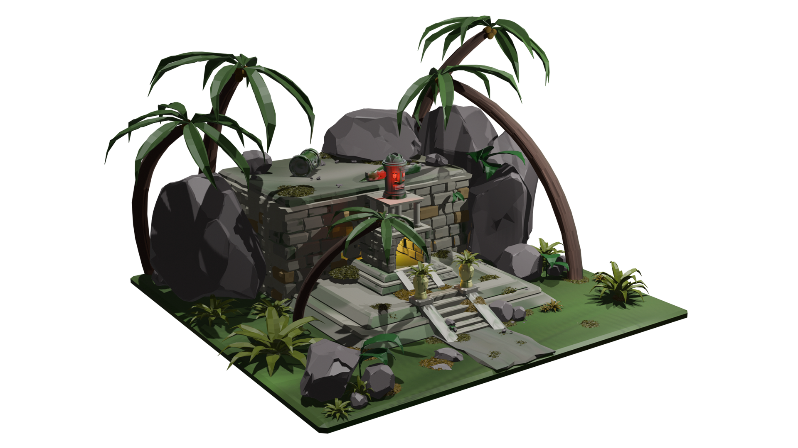
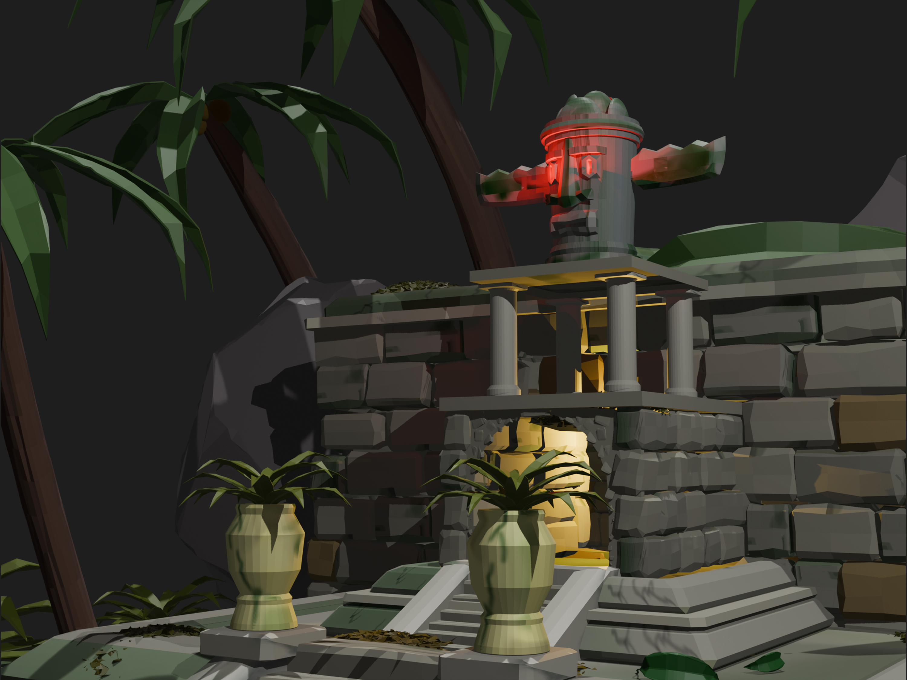
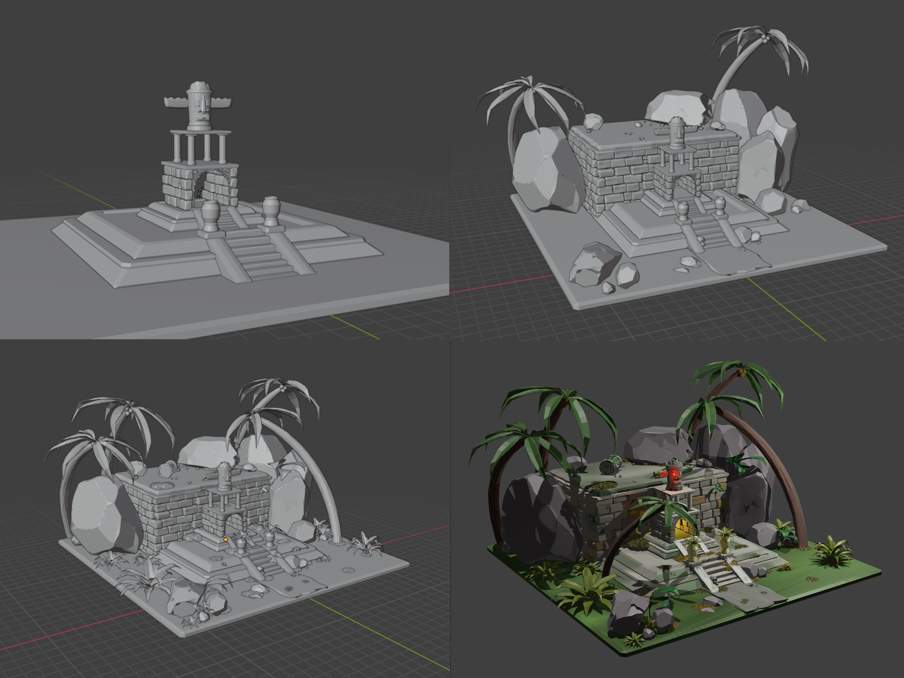
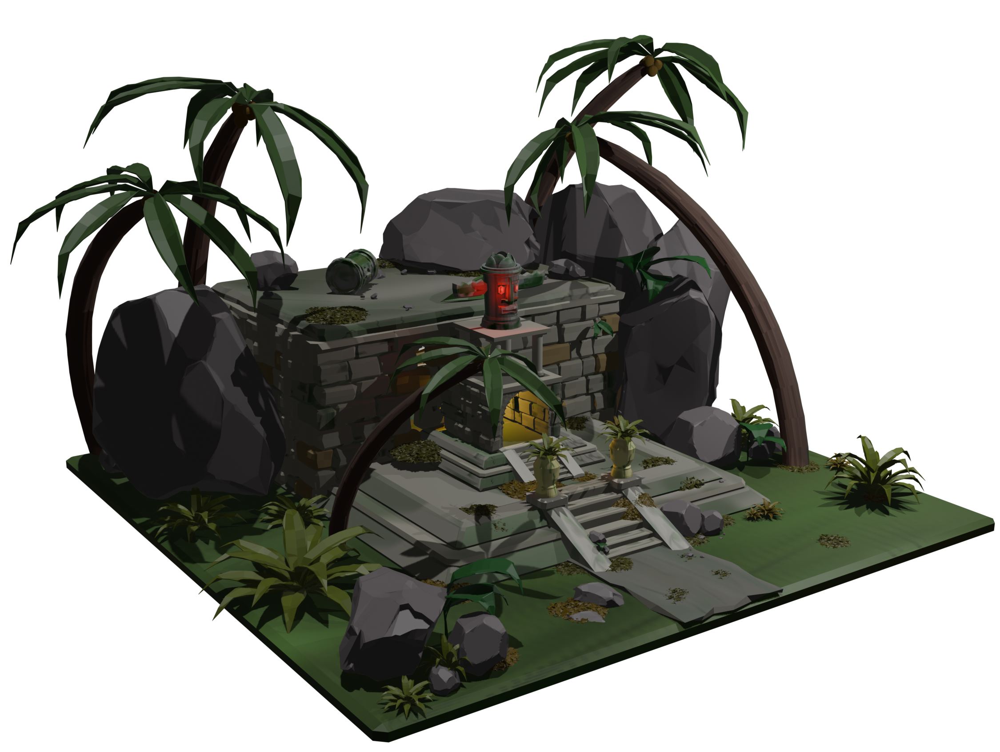
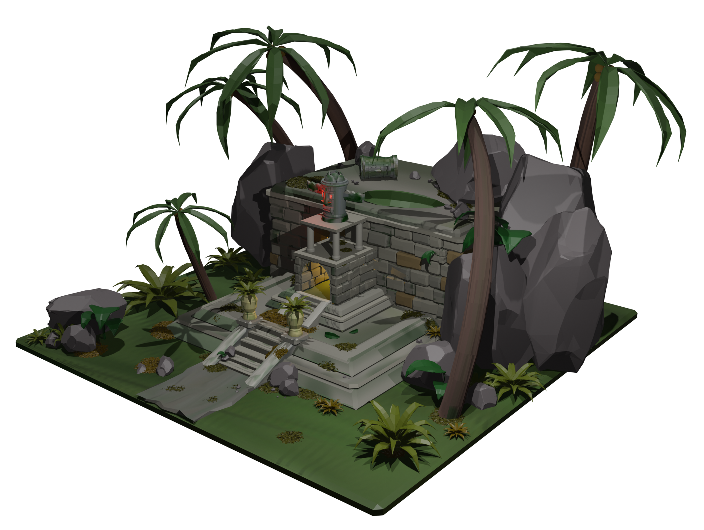
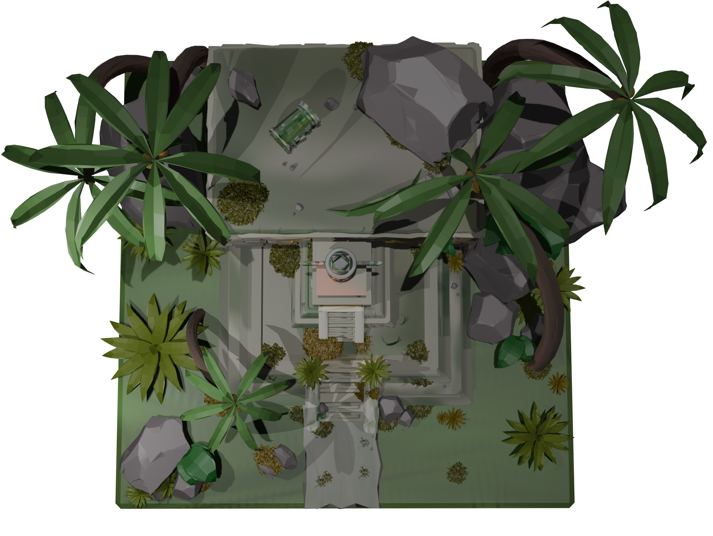

2025 · 3D DesignDe jungle tempel is een 3D-omgeving gemaakt in Blender. De tempel is onderdeel van een mysterieuze setting met tropische planten, rotsen en een opvallende totempaal.

De jungle tempel is een volledig zelfstandig 3D-project gemaakt in Blender. Het doel was een sfeervol en gedetailleerde omgeving te bouwen met een duidelijk karakter: mysterieus, organisch en tropisch.
Natuurlijke elementen zoals stenen, planten, mos en een totempaal komen samen tot één compositie. Lichtval en materiaaltexturen zorgen voor diepte en realisme.
In deze weergave ligt de focus op de vegetatie en omringende elementen zoals rotsformaties en bladeren. Kleine details zoals mosgroei, lichtval en materiaaltexturen dragen bij aan de realistische en mysterieuze sfeer van het geheel.


Een brede render van de volledige jungle tempel in zijn natuurlijke omgeving. De compositie is opgebouwd met een duidelijk centraal punt, omringd door weelderige planten, rotsen en bomen.
De totempaal vormt het hart van de scène en is rijk aan vorm en symbool. Door licht en schaduw accenten krijgt deze een bijna spirituele lading.

Het ontwerpproces van de jungle tempel begon met het verzamelen van visuele inspiratie op Pinterest. Vanuit daar ben ik intuïtief aan de slag gegaan in Blender, zonder vaste schetsen, maar juist op gevoel en met ruimte om te experimenteren.
Vormen, texturen en compositie zijn iteratief verfijnd totdat de scène de gewenste sfeer uitstraalde: mysterieus, organisch en vol detail.

Een sfeervol en gedetailleerd 3D-ontwerp van een jungle tempel, waarin natuurlijke elementen zoals stenen, planten en een totempaal samenkomen tot één geheel. Hieronder de vier aanzichten van het eindresultaat.


